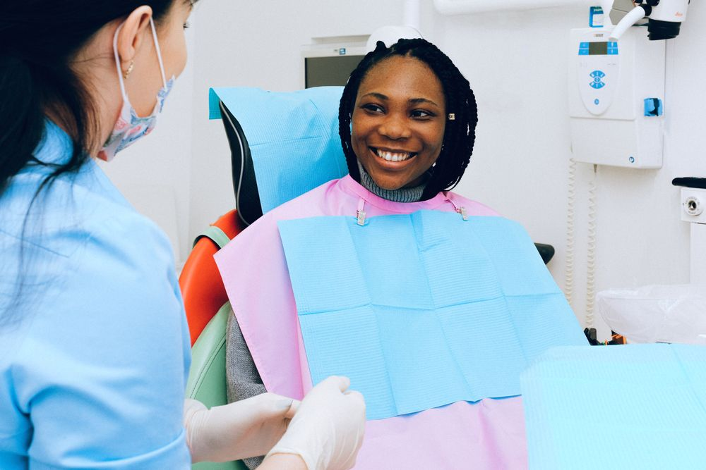

01 · Everyday care
General Dentistry
General dentistry is the foundation of everything else we do. Regular examinations and professional cleaning keep your mouth healthy and catch small issues — early decay, gum inflammation, worn enamel — long before they become painful or expensive.
- Comprehensive exams & digital x-rays
- Professional cleanings & hygiene visits
- Tooth-coloured fillings
- Gum health & periodontal care
- Root canal therapy
- Crowns & bridges
Who it's for
Everyone, ideally twice a year. If it has been more than two years since your last visit, you're welcome here too — we'll simply take things one careful step at a time.
